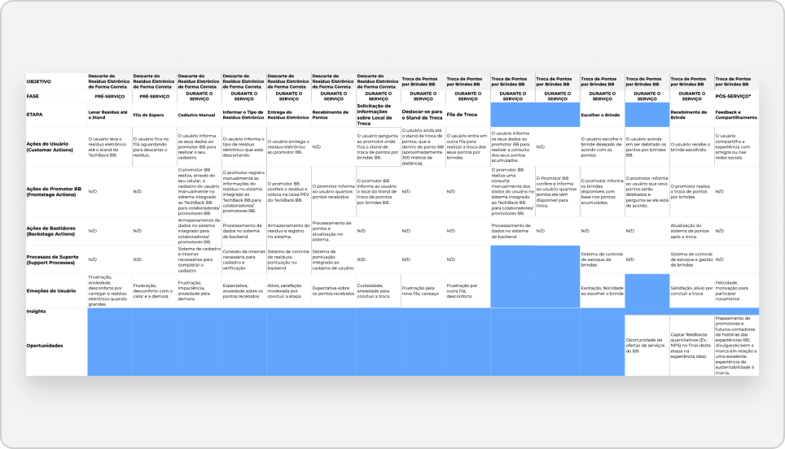
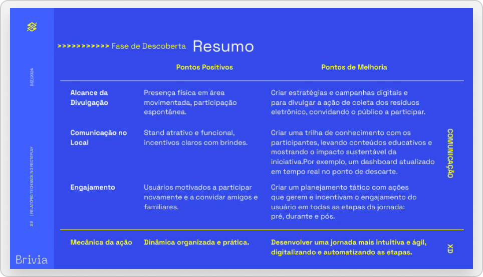
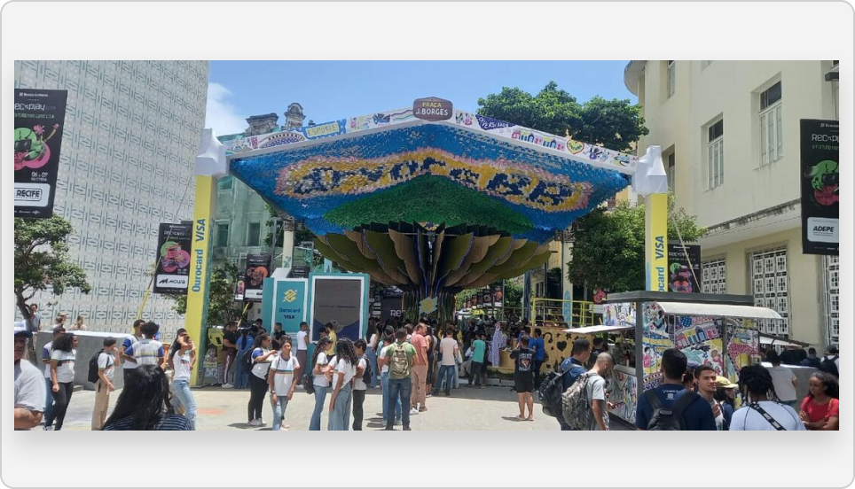
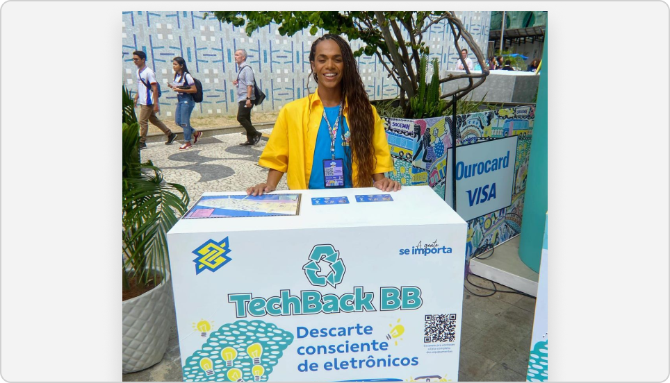
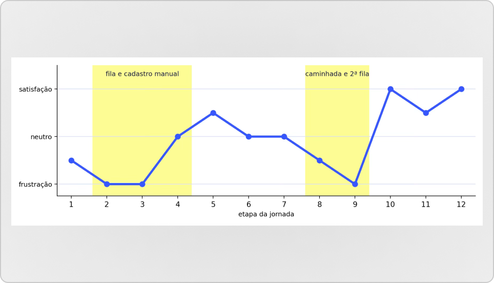
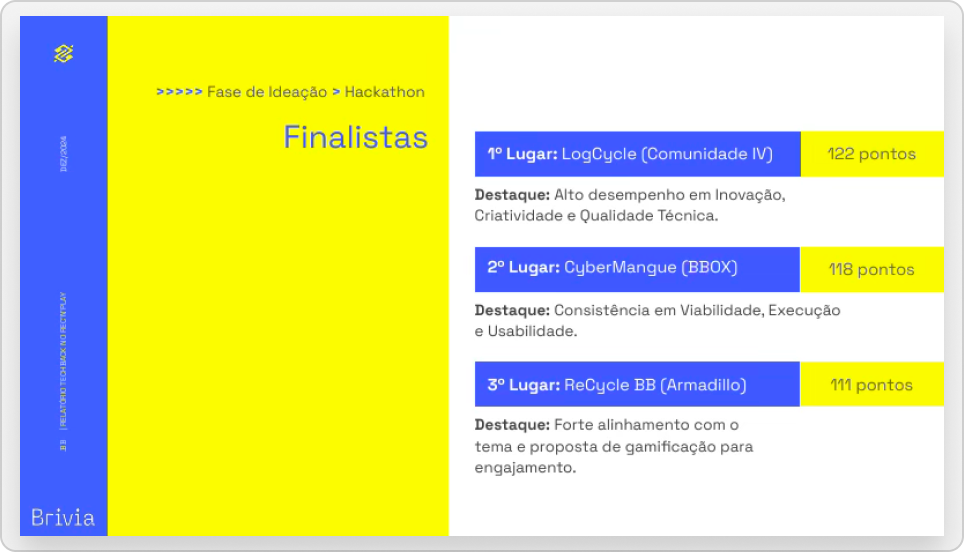

CASE 5 · TECHBACK BB (BANCO DO BRASIL) · 2024
Pesquisa de Guerrilha em Sustentabilidade
Como entrevistas a céu aberto no Rec'n'Play mostraram que o descarte de lixo eletrônico precisava de uma jornada autônoma
- 3 dias
- De observação e entrevistas no Rec'n'Play
- 12 etapas
- Mapeadas na jornada as-is, com as emoções de cada uma
- 493
- Participantes da ação do BB no evento
RESUMO EM 30 SEGUNDOS
Problema
O BB queria saber se as pessoas adeririam ao descarte correto de lixo eletrônico e se a jornada poderia ser automatizada, sem nenhuma pesquisa prévia.
O que fiz
Em 3 dias no Rec'n'Play, por iniciativa própria, fiz observação e entrevistas de guerrilha no stand, mapeei a jornada as-is em 12 etapas e mentorei os times do Hackathon.
Resultado
Um diagnóstico claro do atrito (cadastro manual, duas filas e 300 m de caminhada) e um relatório que orientou o TechBack digital e abriu caminho para pesquisar com catadores no ExpoCatadores.
A SOLUÇÃO
Um diagnóstico de campo para orientar o TechBack digital
Entreguei o mapa da jornada as-is em 12 etapas, a curva de emoção, a síntese dos achados em quatro eixos e a análise das soluções do Hackathon, reunidos no relatório de dezembro de 2024.
As soluções com visão computacional foram criadas pelos times do Hackathon, que eu mentorei.


Decisões-chave
Pesquisar por iniciativa própria
- Em vez de
- Só mentorar os times do Hackathon, como previsto.
- Por quê
- Gerar um artefato mais valioso do que a mentoria sozinha e entender como a experiência funcionava na prática.
- Resultado
- Evidências para defender com os stakeholders uma pesquisa mais profunda.
Perguntas abertas definidas antes
- Em vez de
- Improvisar as perguntas no momento da entrevista.
- Por quê
- Entrevistas rápidas, logo após o atendimento, induzem respostas com facilidade.
- Resultado
- Relatos espontâneos, como o pedido de um QR Code para cadastro prévio.
Mapear as emoções, e não só as etapas
- Em vez de
- Listar apenas o passo a passo do atendimento.
- Por quê
- Mostrar onde a frustração se concentra na jornada.
- Resultado
- Dois blocos de atrito claros: fila e cadastro manual no início, e 300 m de caminhada com uma segunda fila no fim.
Visão geral e desafio
Em novembro de 2024, o Banco do Brasil levou ao Rec'n'Play, em Recife, o TechBack BB: uma ação em que as pessoas trocavam resíduos eletrônicos por pontos e brindes, com apoio da Reeecicle. O Brasil é o 5º país que mais gera lixo eletrônico, mas só 3% é descartado corretamente.
O BB queria saber se as pessoas adeririam a esse comportamento e se o descarte poderia ser automatizado. Em paralelo, um Hackathon propunha soluções com visão computacional. Meu desafio foi entender, em poucos dias e sem estrutura de pesquisa prévia, como a experiência já funcionava na prática, para orientar o TechBack digital.
Meu papel
Como Líder de UX e mentora do Hackathon, fui a Recife para apoiar os times. Para ter um artefato mais valioso do que a mentoria sozinha, planejei e conduzi, por iniciativa própria, uma pesquisa de guerrilha no stand do TechBack. Atuei como observadora, seguindo as boas práticas de pesquisa, e transformei cada atendimento em um mapa de jornada. Os achados deram força para defender com os stakeholders uma pesquisa mais profunda.
Processo
O trabalho seguiu as fases de uma metodologia de UX: descoberta e ideação. Na descoberta, pesquisei o TechBack analógico com observação, entrevistas e mapa de jornada As-Is. Na ideação, mentorei e acompanhei os times do Hackathon, que propuseram soluções com visão computacional para reconhecer o resíduo. Validação e design ficaram para as próximas etapas do projeto.
Atividades
A seguir, algumas das atividades e etapas que realizei ao longo deste case.
Mentoria no Hackathon
Apoiei os times do Hackathon BB 2024 (7 e 8/11, no Porto Digital), cujo desafio era reconhecer eletrônicos a descartar por visão computacional.Observação não Participante
Acompanhei atendimentos reais no stand do Ponto BB, em Recife Antigo, de 6 a 8/11, registrando ações, bastidores e emoções de cada etapa.Entrevistas de Guerrilha
Após cada atendimento, entrevistei quem tinha trocado eletrônicos por brindes, com perguntas abertas definidas antes para não induzir respostas.


Mapa da Jornada As-Is
Registrei 12 etapas, do descarte à troca por brindes, com ações do usuário e do promotor, bastidores, processos de suporte e emoções. O pós-serviço não foi mapeado.Curva de Emoção
Cruzei as emoções registradas e achei dois blocos de frustração: fila e cadastro manual no início, e uma caminhada de cerca de 300 m com segunda fila para trocar os pontos.

Síntese em Quatro Eixos
Organizei os achados em alcance da divulgação, comunicação no local, engajamento e mecânica da ação, com pontos positivos e de melhoria em cada um.Análise das Soluções do Hackathon
Analisei as soluções apresentadas. O LogCycle (122 pontos) levou o 1º lugar, seguido de CyberMangue (118) e ReCycle BB (111), e extraí os insights gerais.

Resultados
O que o meu trabalho causou
Diagnóstico claro da jornada
O mapa as-is mostrou que as pessoas estão dispostas a descartar corretamente, mas que falta autonomia: cadastro manual, duas filas e 300 m de deslocamento.
Insumos para o TechBack digital
Os achados e os insights do Hackathon viraram o relatório de dezembro de 2024, com os próximos passos.
Uma nova rodada de pesquisa
O relatório abriu caminho para entrevistas com catadores no ExpoCatadores, onde descobrimos que a solução podia ser maior, ligada a ESG.
O que aconteceu com o projeto
A ação do BB no evento
O TechBack analógico teve 493 participantes, 4.244 itens descartados e mais de 2 toneladas de resíduo eletrônico, segundo o dashboard da Reeecicle. Esse é o resultado da ação, não da pesquisa.
Saí antes dos próximos passos
Saí da Brivia logo depois do ExpoCatadores, então não acompanhei a evolução do TechBack digital.
Insights
As pessoas já querem descartar
Quem participou veio sem planejar e se dispôs a repetir e convidar amigos. O comportamento existe; falta facilitá-lo.
O atrito está na mecânica
Cadastro manual, duas filas e 300 m de caminhada geraram as emoções mais negativas. Um usuário pediu QR Code para cadastro prévio.
Faltou educar e engajar
Usuários queriam saber o impacto ambiental, e não havia convite para compartilhar nas redes. Também pediram brindes mais diversos e ligados à sustentabilidade.
Aprendizados
Observar antes de propor
Acompanhar atendimentos reais mostrou fricções que o briefing não apontava, como a segunda fila e o deslocamento entre stands.
Ir além do escopo gera artefato
A mentoria virou pesquisa, e a pesquisa virou evidência para defender o próximo passo com os stakeholders.
Pesquisa rasa também move decisões
A guerrilha foi superficial por natureza e as condições do evento podem ter influenciado os relatos. Mesmo assim, deu direção ao produto.
Ideias e Oportunidades
As ideias ficaram em três grupos.
Na jornada
Cadastro prévio por QR Code, identificação automática do resíduo por visão computacional e crédito automático de pontos, sem segunda fila.
No engajamento
Dashboard de impacto em tempo real no ponto de descarte, hashtag e desafios nas redes, e um NPS ao final da experiência.
Nas recompensas
Brindes mais diversos e alinhados à sustentabilidade, e pontos Livelo.